Os espaços de imagem da home e do menu do topo, com print de onde cada um fica, a proporção no computador e no celular, e a dimensão de arquivo a criar. Toda a arte que está no site hoje é rascunho.
Fileira de discos que abre ao passar o mouse nas abas do topo
Cada aba do topo abre uma fileira de discos, um por subcategoria, com a foto do produto recortada por cima. É a primeira imagem de produto que a pessoa vê, antes mesmo de rolar a home. Só existe no computador: no celular o menu é lista de texto.
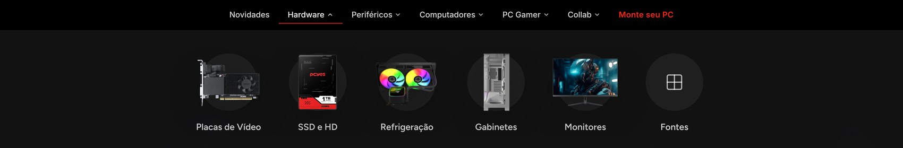
No computador, aba Hardware. O último disco não tem arte e cai num ícone de grade.
Aba Periféricos, com as fotos de catálogo que estão no ar hoje. Escalas diferentes entre si e peça preta somindo no fundo escuro.
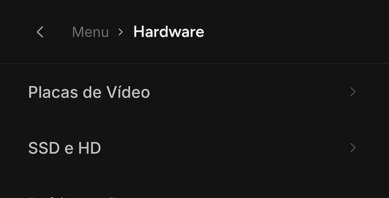
No celular, lista de texto. Não usa imagem.
O disco tem tamanho fixo, não muda com a largura da tela. A arte é maior que o disco, vaza de propósito para fora dele e ainda cresce 5% com o mouse por cima.
| Aba do topo | Discos | O que usa |
|---|---|---|
| Hardware | 6 | Placas de Vídeo, SSD e HD, Refrigeração, Gabinetes, Monitores, Fontes |
| Periféricos | 6 | Teclados, Mouse, Mousepads, Cadeiras, Headsets, Streaming |
| Computadores | 2 | Mini PC e PCYES One |
| Drivers e manuais | 6 | Repete a arte das outras abas, não pede peça nova |
PC Gamer e Collab ficam de fora: usam cena de PC pronto e banner de marca parceira, arte que já existe.
| Peça | Dimensão | Proporção | Qtd. | Formato | Peso máximo |
|---|---|---|---|---|---|
| Recorte de categoria | 320 × 320 | 1 : 1 | 14 | PNG | 60 KB |
Único espaço que pede PNG: a arte entra solta sobre um disco translúcido, sem moldura. O produto ocupa 88% do quadrado, centralizado, com folga igual nos quatro lados — é o que faz teclado, mouse e gabinete parecerem do mesmo tamanho na fileira. O disco é claro no tema escuro e escuro no claro: peça preta pede luz de contorno para não sumir.
Primeira coisa que a pessoa vê ao entrar no site
Três artes em rodízio automático, trocando a cada 6,5 segundos. A arte ativa ocupa 82% da largura da tela e as vizinhas aparecem escurecidas nas beiradas. No computador o quadro é deitado, no celular é em pé.
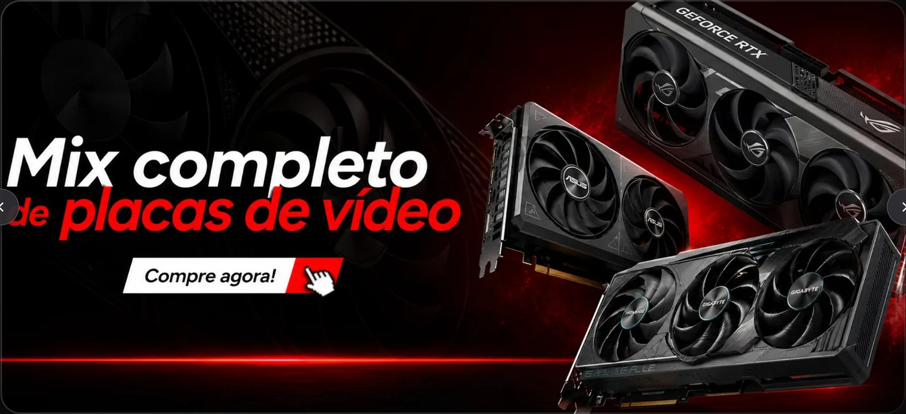
No computador, quadro deitado.
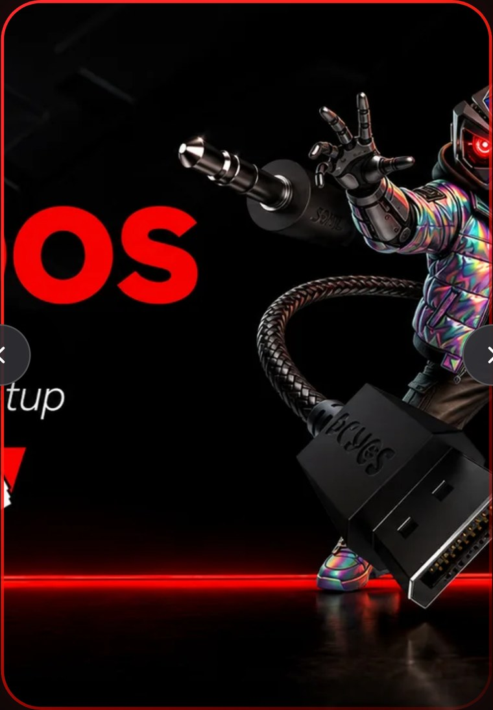
No celular, quadro em pé. Precisa de arte própria, senão a arte deitada é cortada pelo meio.
| Peça | Dimensão | Proporção | Qtd. | Formato | Peso máximo |
|---|---|---|---|---|---|
| Arte de computador | 2560 × 1067 | 2,40 : 1 | 3 | WebP | 250 KB |
| Arte de celular | 1080 × 1560 | 0,69 : 1 | 3 | WebP | 180 KB |
A altura do espaço trava em 600 pixels e a largura acompanha o tamanho da tela, então em monitor grande o quadro estica até 3,5 para 1. Chamada, botão e logo precisam caber na faixa central de 2560 por 730 pixels. Fora dela a arte é decorativa e pode ser cortada.
Nas laterais, deixar 4% de folga, porque as setas do carrossel passam por cima da arte. O corte é puxado pelo alto da imagem, então vale posicionar o assunto principal um pouco acima do centro.
Coluna da direita do bloco Drops mais cobiçados, ao lado dos oito produtos
No computador o banner acompanha a altura das duas fileiras de produto e fica bem em pé, quase o dobro de altura em relação à largura. No celular a grade quebra e ele deita. São dois enquadramentos opostos, então precisa de duas artes.
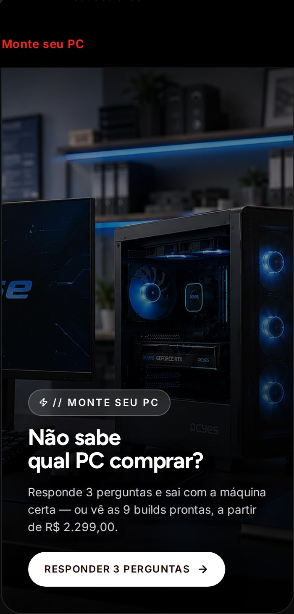
No computador, em pé.
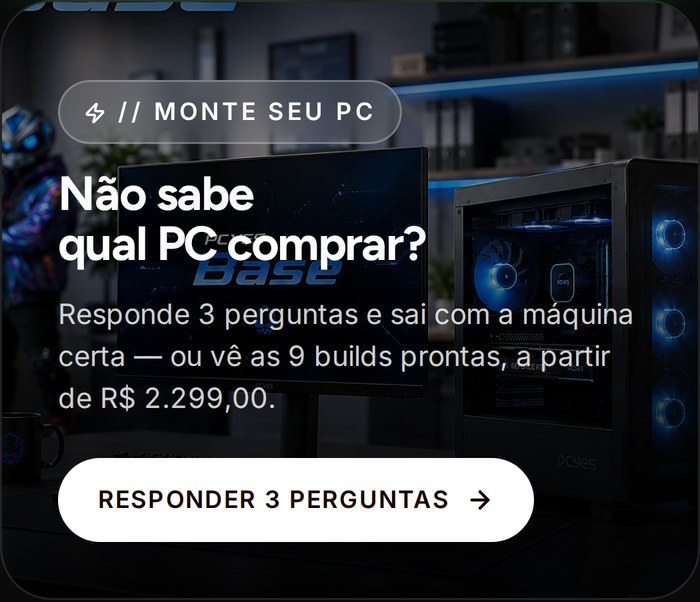
No celular, deitado.
| Peça | Dimensão | Proporção | Qtd. | Formato | Peso máximo |
|---|---|---|---|---|---|
| Arte de computador | 900 × 1800 | 0,50 : 1 | 1 | WebP | 200 KB |
| Arte de celular | 1050 × 900 | 1,17 : 1 | 1 | WebP | 150 KB |
O espaço convida quem não entende de peça a montar o próprio PC, então a arte deve mostrar o resultado: a máquina pronta, ligada, em cima da mesa. Evitar interior de gabinete e evitar nome de linha escrito na cena, porque o banner é genérico.
Sobre a arte entra um escurecido preto do topo para a base, mais a chamada e o botão. Se a peça já vier com chamada e botão desenhados, é só avisar que essas camadas saem. O banner fica escuro mesmo com o site no tema claro.
Bloco Equipamentos por categoria
Mosaico de quadros encaixados, sem rolagem. Oito quadros em três tamanhos: Gabinetes ocupa o grande, Cadeiras e Microfones ficam em pé, e os outros cinco entram nos pequenos.
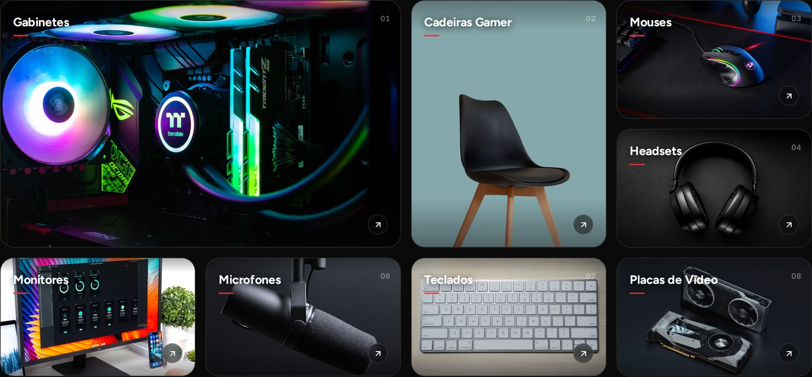
No computador, quatro colunas. Os quadros menores não são quadrados, são deitados.
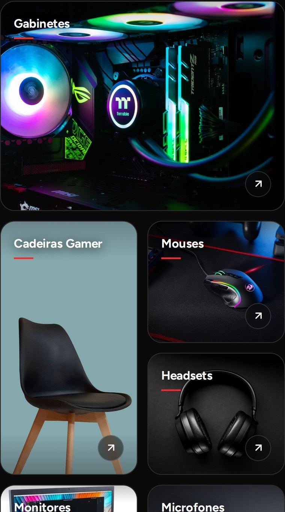
No celular, duas colunas.
Não existe versão de computador e versão de celular: cada quadro mantém a orientação nas duas telas, então uma arte serve as duas. Os retângulos abaixo estão na proporção certa e no tamanho relativo real.
| Quadro | Categorias que usam | Qtd. | Proporção na tela |
|---|---|---|---|
| Grande | Gabinetes | 1 | 1,36:1 a 2,00:1 |
| Em pé | Cadeiras Gamer, Microfones | 2 | 0,54:1 a 0,98:1 |
| Pequeno | Mouses, Headsets, Monitores, Teclados, Placas de Vídeo | 5 | 1,13:1 a 2,04:1 |
| Quadro | Dimensão | Proporção | Qtd. | Formato | Peso máximo |
|---|---|---|---|---|---|
| Grande | 1600 × 970 | 1,65 : 1 | 1 | WebP | 180 KB |
| Em pé | 800 × 1100 | 0,73 : 1 | 2 | WebP | 140 KB |
| Pequeno | 900 × 590 | 1,53 : 1 | 5 | WebP | 110 KB |
Cada quadro muda de proporção entre o celular e o monitor grande, então a dimensão sugerida fica no meio do caminho e o corte chega a comer um quarto da imagem nos extremos. O produto precisa estar bem centralizado, com 25% de folga em todas as bordas.
O nome da categoria e a contagem de itens entram por cima, no canto superior esquerdo, então evitar detalhe importante nos primeiros 20% da altura.
Bloco com comparador que desliza sobre a cena de jogo
Uma cena de jogo dividida ao meio por uma alça que a pessoa arrasta. O lado esquerdo simula a placa antiga, com menos definição e menos cor, e o direito mostra a cena realçada. A mesma imagem também aparece bem desfocada como fundo do bloco inteiro.
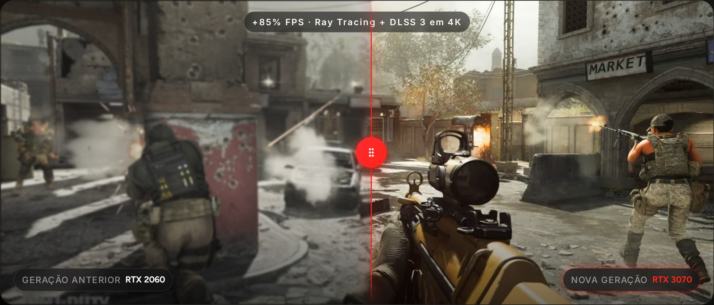
No computador, quadro bem panorâmico.
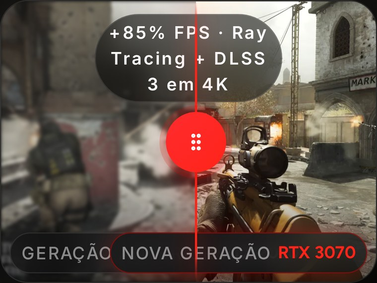
No celular, quadro quase quadrado.
| Peça | Dimensão | Proporção | Qtd. | Formato | Peso máximo |
|---|---|---|---|---|---|
| Cena de computador | 2560 × 1097 | 21 : 9 | 3 | WebP | 400 KB |
| Cena de celular | 1200 × 900 | 4 : 3 | 3 | WebP | 220 KB |
Este é o único espaço com proporção fixa, que não muda conforme o tamanho da tela. Em compensação os dois formatos são bem distantes um do outro: o panorâmico do computador e o quase quadrado do celular.
Se a decisão for entregar um arquivo só por cena, fazer no formato panorâmico de 2560 por 1097 e compor o assunto dentro da faixa central de 1463 por 1097 pixels, que é exatamente o pedaço que o celular vai recortar.
Bloco PCYES In Real Life
Carrossel horizontal de fotos de criador, com o @ por cima da foto. Clicar abre a foto em tamanho grande com uma apresentação da pessoa ao lado. É o único espaço em que computador e celular usam a mesma proporção, 3 por 4 em pé nos dois.
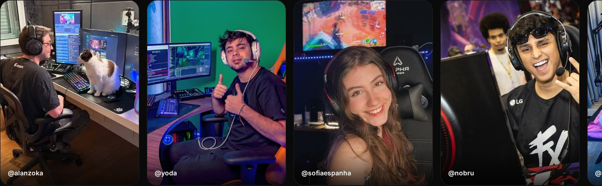
No computador, fotos de 300 por 400 pixels.
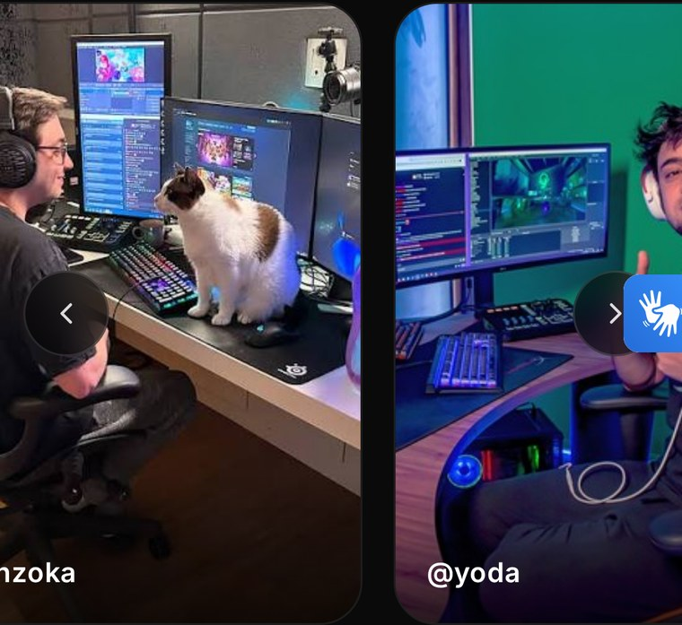
No celular, fotos de 240 por 320 pixels. Mesma proporção.
| Onde aparece | No computador | No celular | Proporção |
|---|---|---|---|
| Foto do carrossel | 300 × 400 px | 240 × 320 px | 3 : 4 |
| Foto aberta em grande | 576 px de largura | largura total da tela | variável |
| Peça | Dimensão | Proporção | Qtd. | Formato | Peso máximo |
|---|---|---|---|---|---|
| Foto de criador | 1200 × 1600 | 3 : 4 | 8 | WebP | 250 KB |
A mesma imagem alimenta a foto pequena do carrossel e a foto aberta em grande, então o tamanho tem que ser pensado pela maior das duas. A dimensão sugerida dá quatro vezes o tamanho da foto do carrossel e cobre a foto aberta com folga.
A base da foto recebe um escurecido onde entra o @ da pessoa, então evitar detalhe importante nos últimos 20% da altura.
Pessoa e equipamento no mesmo quadro: headset na cabeça, monitor ou teclado à vista, mesa aparecendo. Retrato de rosto cortado no ombro não sustenta o bloco, porque não conta que ali existe um setup. A promessa da seção é rotina de uso, e é a foto que precisa provar isso.
Tudo que está no site hoje nesses espaços é imagem de rascunho, colocada só para mostrar o layout de pé. Nenhuma peça se aproveita, então todas as 44 são criação nova. Foto de produto de listagem não entra nesta lista: essa já existe e está certa.
| Espaço | Dimensão | Proporção | Qtd. | O que é a peça |
|---|---|---|---|---|
| Ícones do menu do topo | 320 × 320 | 1 : 1 | 14 | Recorte de produto, fundo transparente |
| Topo da home, computador | 2560 × 1067 | 2,40 : 1 | 3 | Campanha, deitada |
| Topo da home, celular | 1080 × 1560 | 0,69 : 1 | 3 | A mesma campanha, em pé |
| Drops, computador | 900 × 1800 | 0,50 : 1 | 1 | Convite para montar o PC |
| Drops, celular | 1050 × 900 | 1,17 : 1 | 1 | O mesmo convite, deitado |
| Categorias, quadro grande | 1600 × 970 | 1,65 : 1 | 1 | Gabinetes |
| Categorias, quadro em pé | 800 × 1100 | 0,73 : 1 | 2 | Cadeiras e Microfones |
| Categorias, quadro pequeno | 900 × 590 | 1,53 : 1 | 5 | Mouses, Headsets, Monitores, Teclados e Placas |
| Placa de vídeo, computador | 2560 × 1097 | 21 : 9 | 3 | Cena de jogo, panorâmica |
| Placa de vídeo, celular | 1200 × 900 | 4 : 3 | 3 | A mesma cena, quase quadrada |
| Galeria de setups | 1200 × 1600 | 3 : 4 | 8 | Foto de criador com o setup à mostra |
Formato: WebP com qualidade entre 80 e 85. PNG só quando a arte tiver fundo transparente de verdade, que é o caso dos ícones do menu.
Tamanho: exportar sempre no dobro do maior tamanho que o espaço ocupa na tela. Nunca aumentar arte pequena, porque ampliar borra.
Cor: sRGB. O site tem tema claro e tema escuro, e a arte não muda junto, então precisa funcionar sobre os dois.
Texto na arte: evitar sempre que possível. A proporção de quase todo espaço muda conforme o tamanho da tela, então chamada embutida é a primeira coisa a ser cortada. Onde for inevitável, manter na zona segura indicada na página do banner.
Peso: respeitar o limite indicado em cada página. As peças que aparecem antes da primeira rolagem somadas devem ficar abaixo de 700 KB.
Nome do arquivo: espaço, variação e versão, tudo minúsculo e separado por hífen. Por exemplo: topo-performance-celular.webp